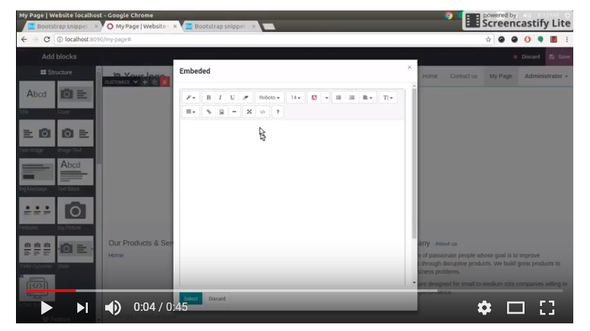

<div class="container">
<div class="row section-content" style="width: 800px;margin: 0 auto;padding: 0;border: 1px solid #ddd;box-shadow: rgba(58,78,95,0.2) 0 10px 16px, rgba(58,78,95,0.05) 0 -5px 16px;">
    <h1 class="bc-h1" style="margin: 0;background: #4d4d4d;padding: 22px;font-size: 27px;font-weight: 600;text-align: center;color: #fff;">WYSIWYG HTML Snippet Builder</h1>
	<div style="padding: 20px;">
	<h4 class="bc-h4" style="margin: 0;padding: 0;font-size: 16px;">We have enhanced user experience of "What You See Is What You Get"  by using the editor. Now you don't need to go to the technical knowledge as you can create your own snippet in few seconds only with very easy way.</h4>
	<br/>
	<h4 class="bc-h4" style="margin: 0;padding: 0;font-size: 16px;">The module provides Odoo default Summernote Library feature to help create customized HTML snippets as per your requirements.</h4>
	<br/>
	<div class="bc-span6 img-content"> 
  		<h4  style="margin: 0;font-size: 15px;background: #169ca8;padding: 15px;position: relative;color: #fff;">List of Features<span class="caret fa-list-alt" style="position: absolute;bottom: -11px;left: 18px;border-width: 12px;border-top-color: #169ca8;"></span></h4><br>
    </div>
	<ul class="list-unstyled">
		<li><i class="fa fa-check text-primary" style="color: #528df3 !important;"></i>Admin can create styling snippet easily</li>	
		<li><i class="fa fa-check text-primary" style="color: #528df3 !important;"></i>Admin can customize snippet with easy way with few clicks only</li>
		<li><i class="fa fa-check text-primary" style="color: #528df3 !important;"></i>No prior programming knowledge required – no need to know what HTML code looks like</li>
		<li><i class="fa fa-check text-primary" style="color: #528df3 !important;"></i>Provide a platform to start websites quickly</li>
		<li><i class="fa fa-check text-primary" style="color: #528df3 !important;"></i>Easily copy and past Bootstrap ready snippets [ https://bootdey.com/bootstrap-snippets ]</li>
	</ul>		
    <div class="bc-span6 img-content"> 
    	<h4 style="margin: 0;font-size: 15px;background: #169ca8;padding: 15px;position: relative;color: #fff;">By using WYSIWYG HTML Snippet Builder app, website admin can produce pages with multiple HTML snippets in the quickest way possible.<span class="caret" style="position: absolute;bottom: -11px;left: 18px;border-width: 12px;border-top-color: #169ca8;"></span></h4><br>
		<div class="embed-responsive embed-responsive-16by9">
		<div class="inner-span">
		<a href="https://www.youtube.com/watch?v=RpZAlFcL-GM" target="_blank"></a></div>
		</div>

		<div style=" text-align: center; margin-top: 30px; margin-bottom: 20px; ">
			<a href="https://www.youtube.com/watch?v=RpZAlFcL-GM" target="_blank" style=" background: #dc1919; padding: 10px 20px 10px 56px; display: inline-block; vertical-align: middle; color: #fff; text-transform: uppercase; font-weight: 600; position: relative; border-radius: 40px; overflow: hidden;"><i class="fa fa-play" style=" position: absolute; left: 0; top: 0; bottom: 0; width: 50px; text-align: center; line-height: 42px; background: #c31515; "></i> Watch Video</a>
		</div>
		</div>
    
</div>

<div class="oe_spaced" style="margin: 0;padding: 25px;background: #4d4d4d;color: #fff;">
	<h2 class="text-center" style="margin-top: 32px;  font-weight: 600;color: #fff;">Technical Help , Queries &amp; Support</h2>
	<p class="text-center mb32">Please feel free to contact for any suggestions, issues &amp; queries</p>
	<div class="text-center"><a class="btn btn-success btn-lg" rel="nofollow" href="mailto:support@atharvasystem.com" style="color: #fff;background: #169ca8;border-color: #169ca8;border-radius: 30px;padding: 15px 35px;font-size: 15px;line-height: 15px;box-shadow: rgba(58,78,95,0.2) 0 10px 16px, rgba(58,78,95,0.05) 0 -5px 16px;"> <i class="fa fa-envelope"></i> Support</a></div>
</div>

</div>
